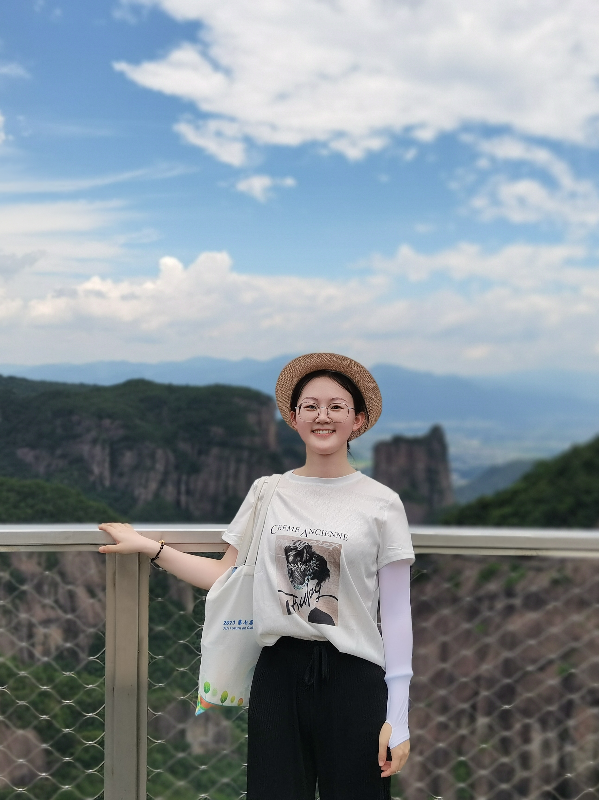

硕士研究生
-
 田佳静 2020级硕士
田佳静 2020级硕士
毕业年份: 2023年
研究方向: 生物质能源碳排放和气候变化
成果及荣誉: 在Resources, Conservation and Recycling
（IF="13.2，JCR1区，中科院1区）发表论文一篇
获国家励志奖学金，专业奖学金，院级优秀党员兴趣爱好： 阅读，跑步
-
 谢缘铭 2020级硕士
谢缘铭 2020级硕士
毕业年份： 2023年
研究方向: 中国退耕区植被净初级生产力格局及驱动力
分析成果及荣誉: 在Land期刊发表论文一篇
曾获院优秀研究生等称号兴趣爱好： 唱歌，画画，手工
-
 余飞燕 2020级硕士
余飞燕 2020级硕士
毕业年份: 2023年
研究方向: 灌木林高分辨率NPP估算方法及分析
成果及荣誉: 获批实用新型专利一项
在International Journal of Remote
Sensing期刊上发表论文一篇兴趣爱好： 旅游，看番，游戏
-
 钟昊明 2020级硕士
钟昊明 2020级硕士
毕业年份: 2024年
研究方向: 中国农田剩余物储量评估和植被碳动态模型
成果及荣誉:
兴趣爱好： 阅读，爬山，尝试新鲜事物
-
方铭杰 2021级硕士
毕业年份: 2024年
研究方向: 西北地区灌木林的动态监测与功能量化评估
成果及荣誉: 以共同作者身份，在《Atmosphere》、
《Land》和《International Journal of Remote
Sensing》期刊各发表论文1篇。
“硕博杯”篮球比赛优秀裁判兴趣爱好： 运动，健身，游泳，读书
-
 郭冰倩 2021级硕士
毕业年份: 2024年
研究方向: 黄土高原退耕土壤固碳收益模拟与评估
成果及荣誉: 在《西安理工大学学报》以第一作者发表文章
1篇，在《Atmosphere》以第二作者发表文章
1篇，获批专利“一种灌木平茬方法”
院级“优秀大学生”兴趣爱好： 观看纪录片和电影、制作手工艺品、羽毛球
-
 甘小凡 2021级硕士
甘小凡 2021级硕士
毕业年份: 2024年
研究方向: 采伐剩余物能源化利用的温室效应评估
成果及荣誉: 在《Atmosphere》期刊发表论文一篇
授权软著一项
院级优秀大学生、“三分钟”演讲第一名兴趣爱好： 舞蹈
-